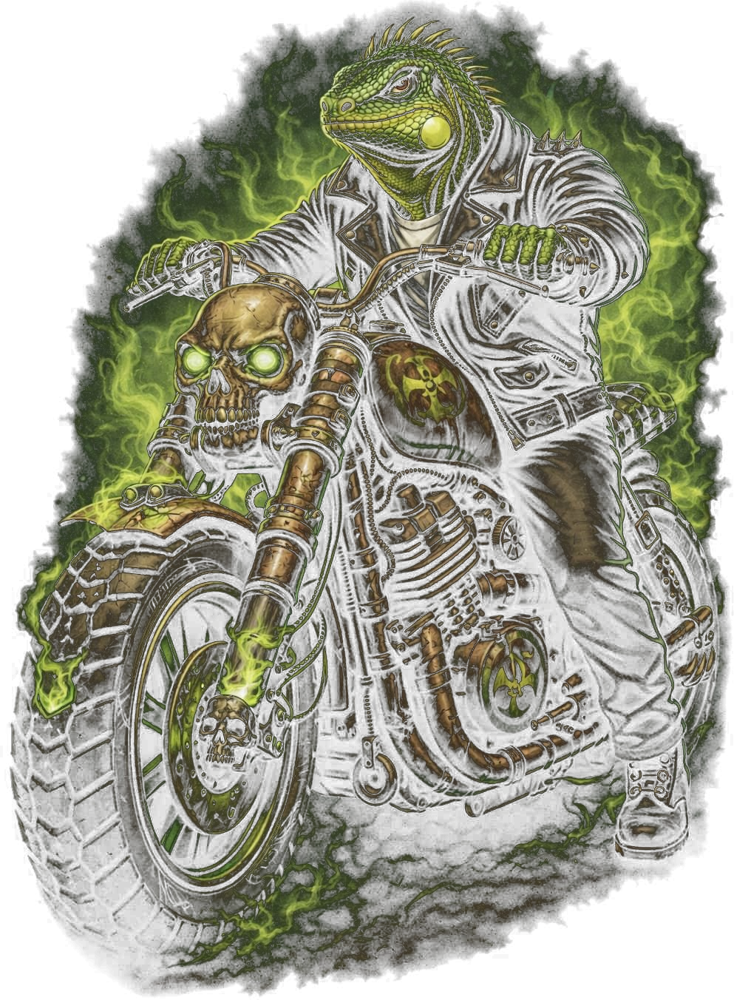
Os Répteis MC são uma irmandade de motociclistas unida pela paixão pelas motos, pelo companheirismo e pela estrada.
Mais do que um grupo que anda junto, somos uma família formada por amizade, respeito, lealdade e participação em eventos, viagens e ações sociais.
Cada integrante representa o brasão com responsabilidade, fortalecendo a união entre os membros e a boa imagem do motociclismo.
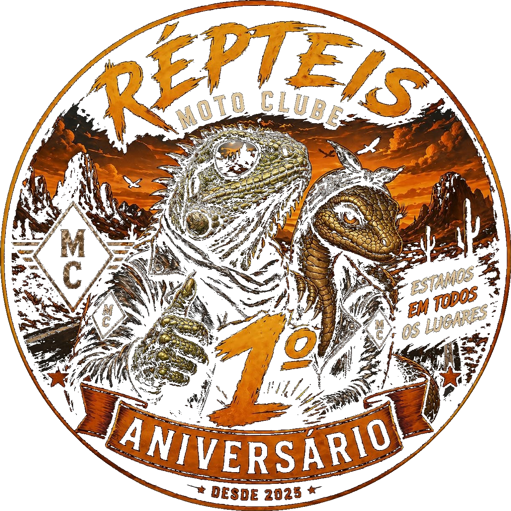
Em 18 de maio, seis motociclistas se dispersaram de um grupo maior e decidiram seguir um caminho próprio. O destino eram locais conhecidos por poucos — um antigo casarão abandonado, cercado por lendas de assombrações. O desafio foi aceito, e ao final daquela jornada nasceram os Répteis MC.
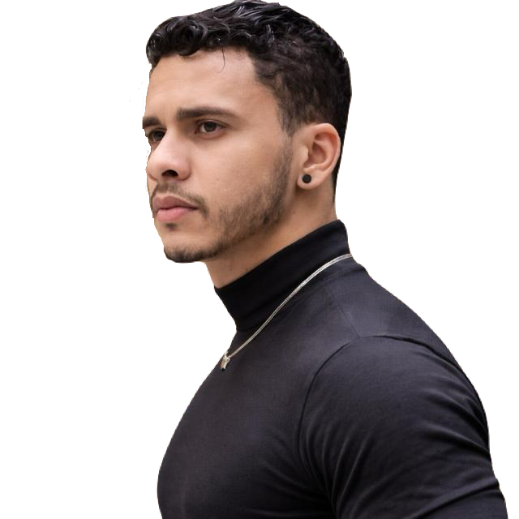
Líder fundador dos Répteis MC, Wagner Santos esteve entre os seis motociclistas que, em 18 de maio de 2025, decidiram trilhar um caminho próprio e dar origem a esta irmandade. Sob sua liderança, o clube cresceu de 6 para 23 membros no primeiro ano.
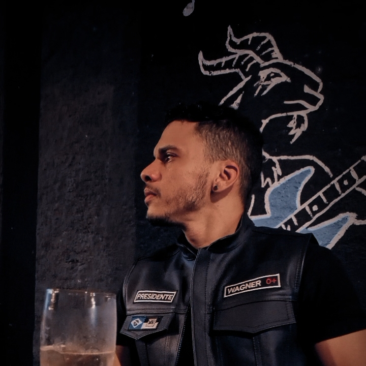
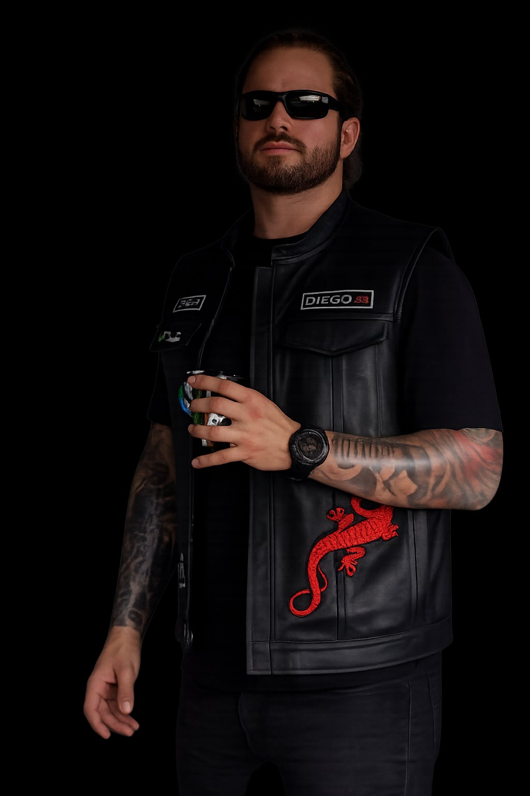
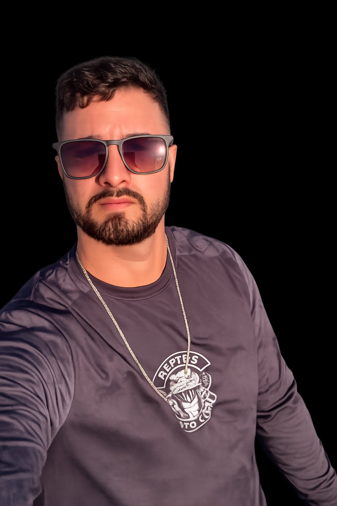
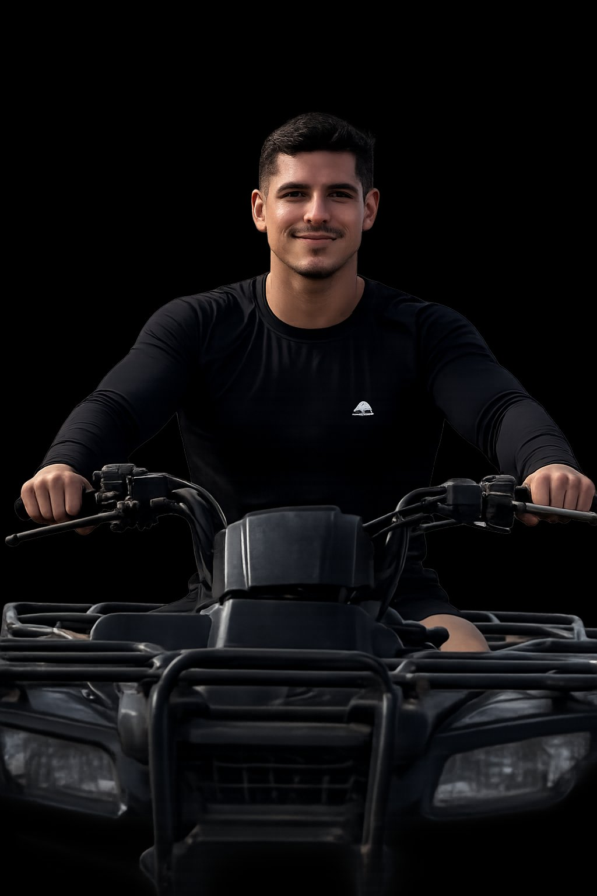
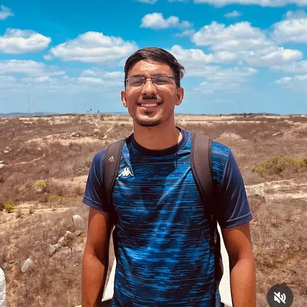
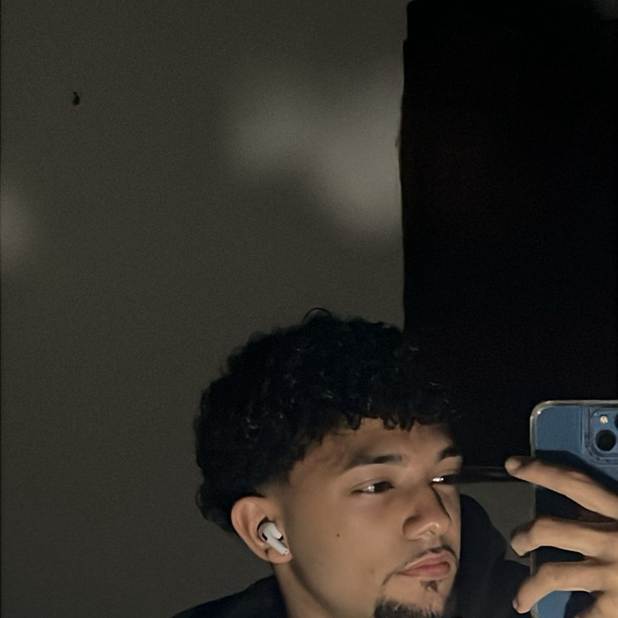
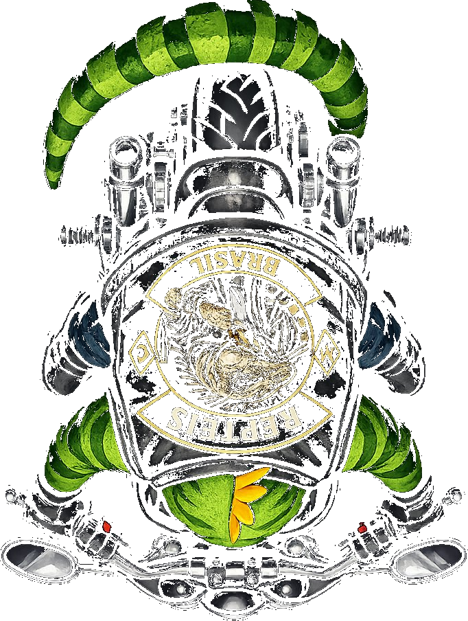
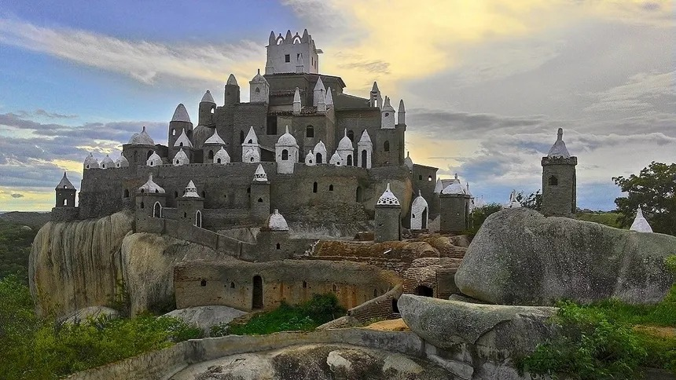
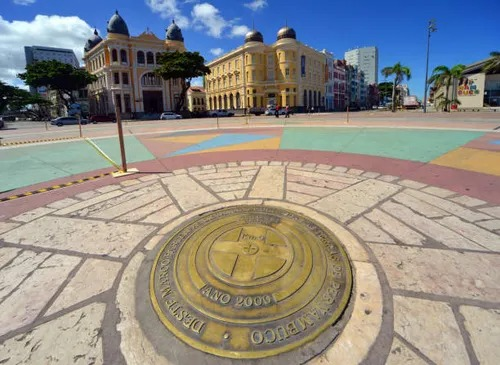
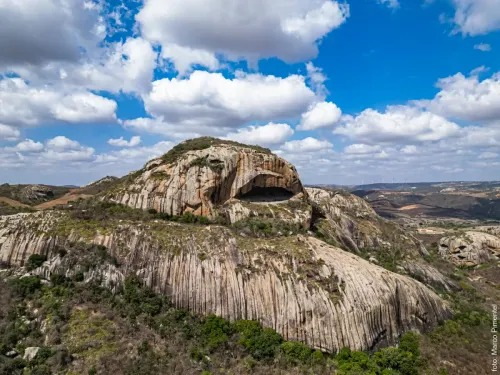
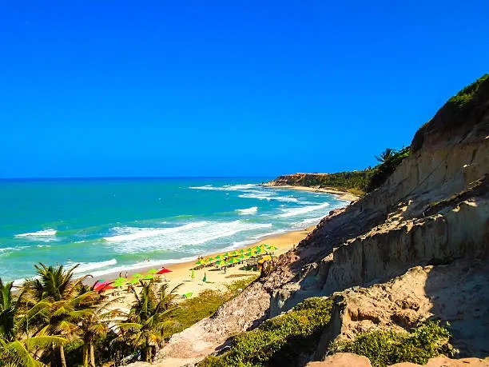
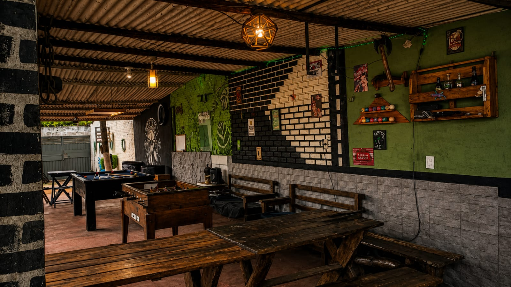
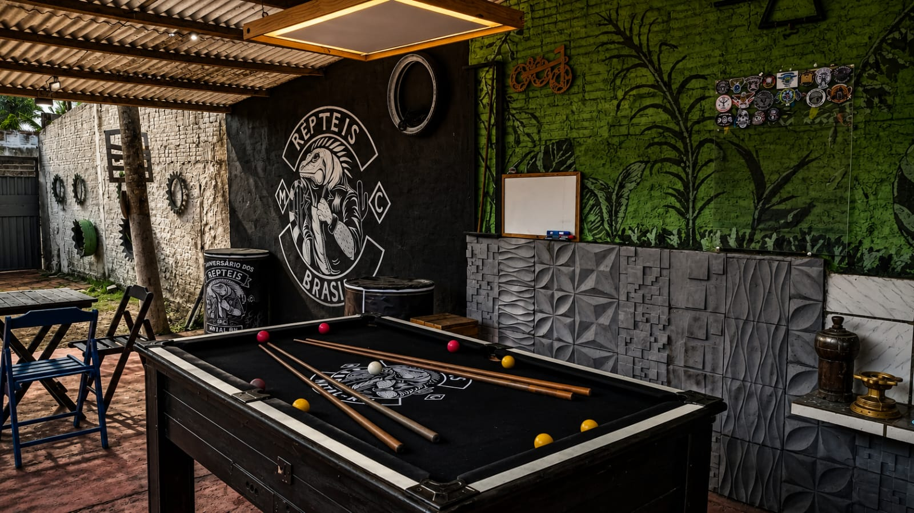